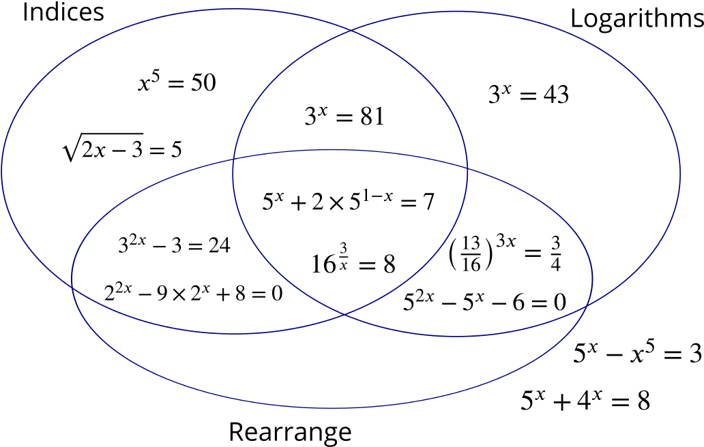

It may not be immediately obvious what kind of equation this is, so we want to manipulate it into a more useful form. What can we do to the equation so there is no −x in the index of the second term?
We can split the second term,
51−x=5×5−x
and then multiply the equation through by 5x,
(5x)2+2×5×5−x×5x(5x)2+10=7×5x=7×5x
which is a quadratic in 5x that we can factorise,
(5x)2−7(5x)+10(5x−2)(5x−5)5x=0=0=2 or 5 .
One of the solutions can now be written down using indices while the other requires logarithms. So we can classify this equation as requiring rearrangement, indices and logarithms.
(G) 32x−3=24
This could be treated as a quadratic in 3x, but a bit of rearrangement reveals a simpler method to solve it.
32x2x=27=3
It’s always worth looking for simpler methods before embarking on complicated ones. In this case, gathering the constant terms together was the inviting first step.
(H) 22x−9×2x+8=0
This is another quadratic, this time in 2x.
22x=(2x)2
so
(2x−8)(2x−1)=0 .
This can be solved using only rearrangement and indices.
(I) 2x−3⎯⎯⎯⎯⎯⎯⎯⎯⎯⎯√=5
Logarithms are not going to help, but squaring both sides will.
(J) 5x−x5=3
This is another example of an equation we don’t know how to solve exactly. We could use a numerical method such as trial and improvement to find an approximate solution.
How many solutions are there? Most numerical methods work best if you know roughly where the solution is. A sketch of y=5x and y=x5 might help.
(K) 163x=8
What’s gone wrong here?
163x23x232x23x=8=1=1=2x=3
Take the logarithm of both sides and rearrange…
3xlog16x=log8=3log16log8 .
Cube root of both sides…
161x=8⎯⎯√3=2
then raise both sides to the power x,
161x=2x=4 .
Have the two methods given the same answer? Which method do you prefer?
(L) (1316)3x=34
We are going to have to use logarithms on this one.
Why would indices not give us a solution?
There is a fundamental difference between equations involving the unknown, x, raised to a fixed power (such as x5) and equations involving a constant raised to an unknown power (such as 5x). How is this difference reflected in the methods required to solve the equations?

Note that we have been a bit imprecise about the meanings of the overlapping regions and about what we mean by rearrangement, so your solution may look quite different.
There are a few equations that look similar but appear on opposite sides of the above diagram. Can you explain why?